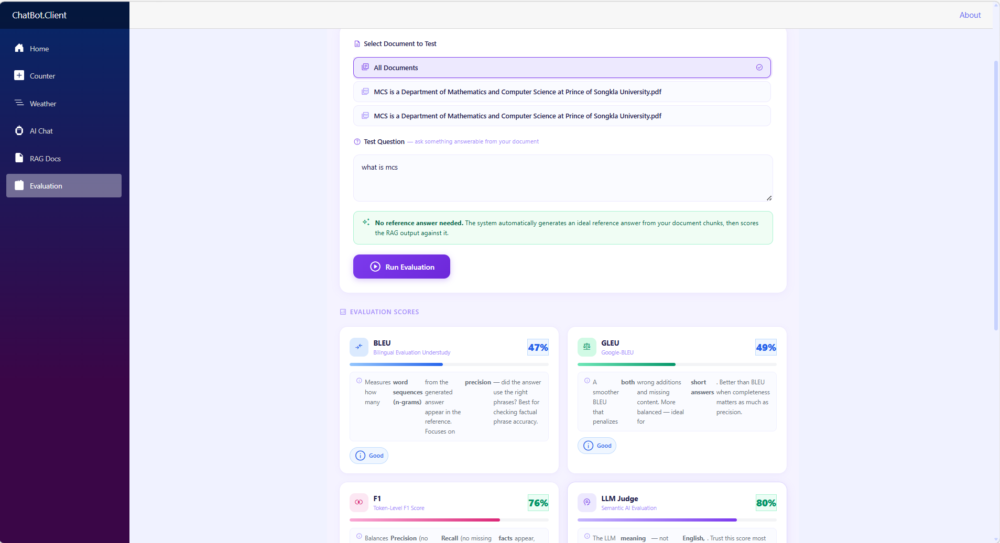
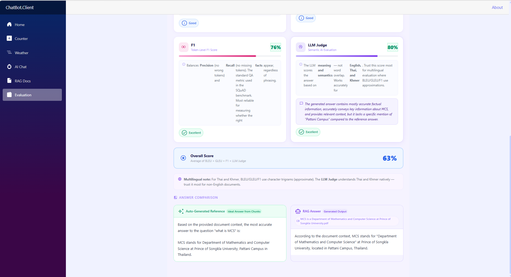
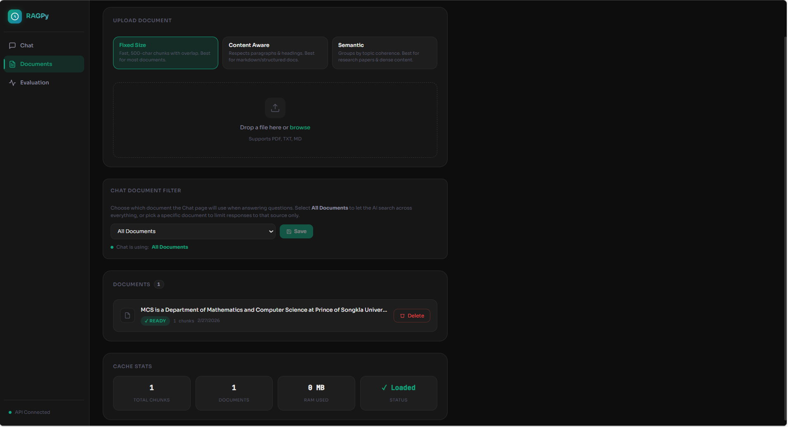
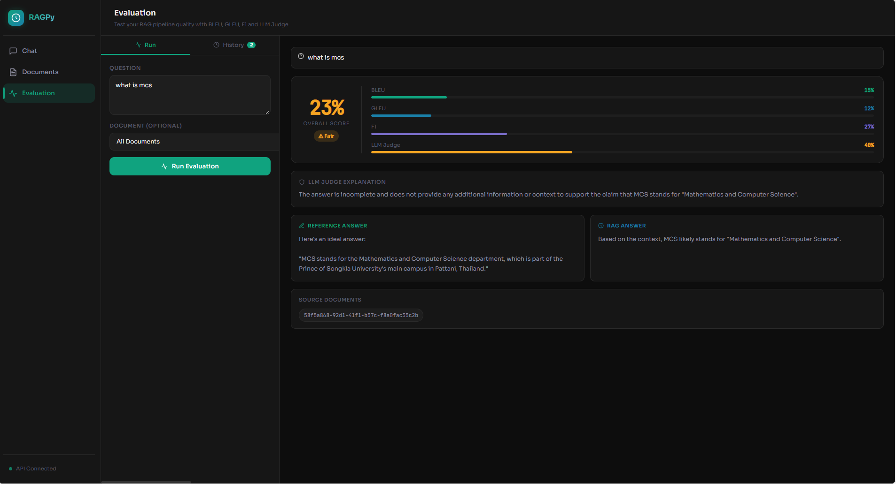
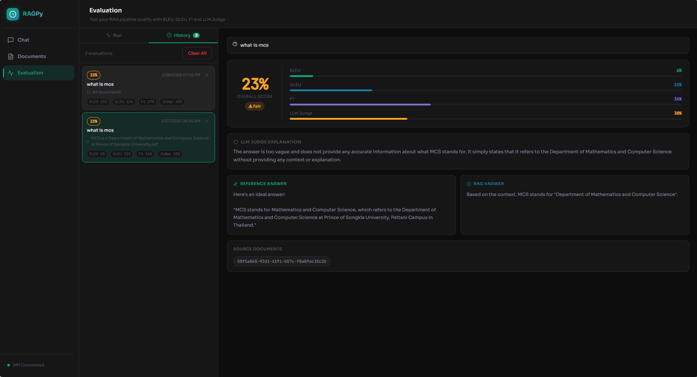
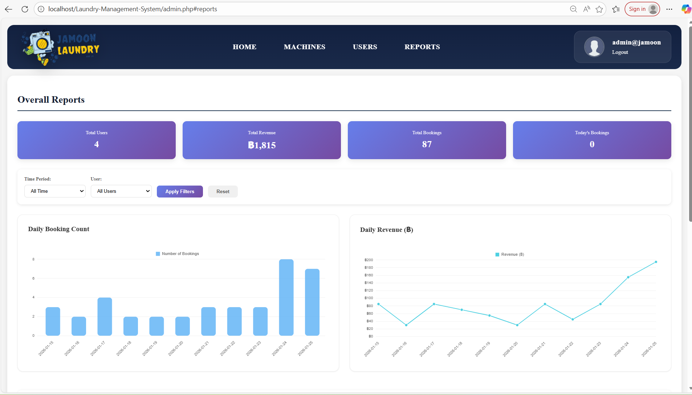
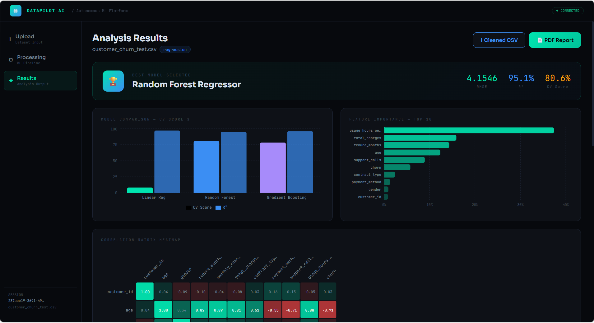
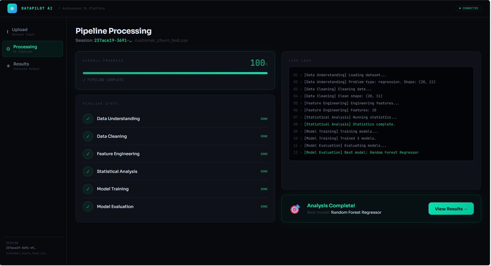
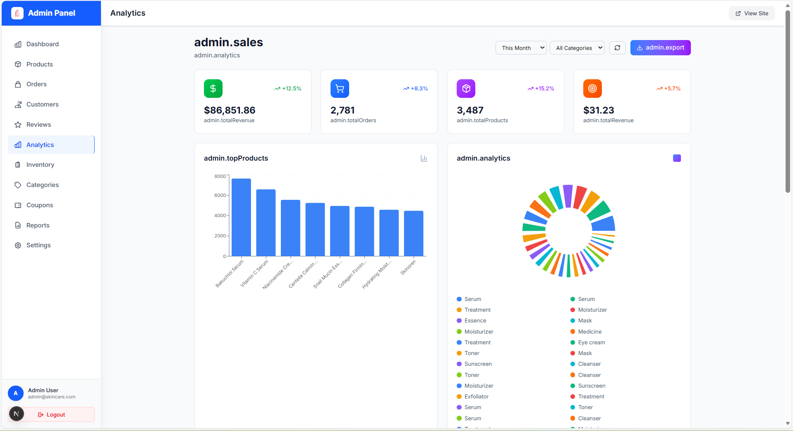

Skills
- Languages: Python, TypeScript, C#, SQL, JavaScript, Go (basic)
- Backend & APIs: NestJS, Express, Flask, FastAPI, ASP.NET Core, SignalR, WebSocket, Socket.IO
- Frontend: React, Next.js, Blazor WebAssembly, Tailwind CSS, HTMX
- Data: PostgreSQL, SQL Server, SQLite, Redis, Qdrant, MongoDB, Prisma
- AI / RAG: RAG (hybrid vector + BM25), Ollama (local LLMs), embeddings, BLEU / GLEU / F1 evaluation, scikit-learn
- DevOps & Integrations: Docker Compose, Ubuntu, nginx, Caddy, Cloudflare Tunnel, Grafana, Prometheus, GitHub Actions, Telegram Bot API, Bakong KHQR
- Testing: xUnit, Jest, Vitest
- Also used: PHP, Java, C, C++, Dart / Flutter, MySQL, XGBoost, K-Means, Decision Tree, Raspberry Pi (GPIO), Azure DevOps
- Communication Languages: Khmer (Native), Thai (Advanced), English (Intermediate)
Education
Prince of Songkla University, Pattani Campus
Jul 2022 - Apr 2026Bachelor of Mathematics and Computer Science
Major: Data Science
Cumulative GPA: 3.68/4.0 | First Class Honors | View Transcript
Graduated April 2026
Work Experience
IT Programmer at MinebeaMitsumi Inc. (Phnom Penh, Cambodia)
May 2026 - Present
Build and run the internal programs our factory teams use, from leave requests to production lines.
Accomplishments:
- Built and run a Telegram leave system (English and Khmer, with a Mini App) and a factory website with live production lines, daily roster, worker borrowing and a leave dashboard. The two talk to each other: approved leave reaches the website every minute and the member list goes back to the bot, so nobody types anything twice.
- Made the systems safer after leave requests were lost once when the database stopped: added a retry queue, health checks, nightly backups with a restore test, and server updates that back up first and roll back automatically if something fails.
- Built Teeth, a two-laptop shift counter for a production line (IN from a key button, OUT from a barcode scanner), with a one-click setup tool that repairs itself every 5 minutes, so non-technical staff can install it.
- Set up Grafana dashboards for server health and response speed of both systems, with no names, IP addresses or cookies stored, and built a Raspberry Pi counter that compares output with the plan for each shift.
- Wrote the documentation for each system: user guide with screenshots, troubleshooting guides, runbooks, system overview and handover notes. Both main repos have CI and an MIT licence.
- Run everything on one Ubuntu server with Docker.
AI Engineer (Co-op Intern, promoted to Staff) at Max Savings (Thailand) Co., LTD (Bangkok, Thailand)
August 2025 - April 2026
Built a chatbot that answers employees' questions from company documents. It finds the right passages first, then the AI answers from them (this is called RAG).
As AI Engineer (Nov 2025 - Apr 2026):
- Built the document pipeline. Admins upload PDFs (up to 10 files, 500 MB each). The program splits each file in 3 ways (fixed size, by structure, by meaning), turns the pieces into embeddings (mxbai-embed-large, nomic-embed-text or all-minilm), and stores them in Qdrant or SQLite.
- Built the search. It joins vector search and keyword search (BM25, with Thai word splitting) using Reciprocal Rank Fusion. It searches all active documents at once, uses only passages above a 70% confidence level (up to 5), and shows the source document, so answers come from the right place.
- The chatbot knows if a question is about a document or about the user. Personal questions are answered from the user's saved memory.
- Added a Redis cache so search stays fast. It is rebuilt when an admin adds, pauses, or deletes a document. Response time went from about 850 ms to under 100 ms with caching and question detection.
- Built an admin test screen to compare chunking and embedding setups. Each answer is scored with NLP metrics (BLEU, GLEU, F1, from Microsoft.Extensions.AI.Evaluation) and star ratings from the admin. A weighted score recommends the best setup, and an AI note explains why. I read the scores to check that the system works correctly.
- Added RAG version control: pause, roll back, or reactivate a setup.
- Built the chat app with Blazor WebAssembly and SignalR: real-time chat with stop, regenerate and copy, login with admin and user roles, searchable chat history (pin, rename, delete), per-user memory, response style, temperature and model choice, and light and dark mode on desktop and mobile.
- Used local models with Ollama (Llama 3.2, Qwen3) and OpenAI models on the company server.
- Wrote 30+ documented REST endpoints, xUnit tests, a user manual, and an API manual.
As co-op intern (Aug 2025 - Oct 2025):
- Learned .NET by building practice apps with Clean Architecture (a music app, a book store with cart and orders, and a login API), wrote xUnit tests, and worked with Azure DevOps pull requests and code reviews from senior developers.
- Built a responsive email screen (Blazor, Bootstrap) and a QR-code check-in for attendance on mobile, for the company's e-office system.
- Took over the chatbot project (.NET 9, only a basic chat screen). Upgraded it to .NET 10 with all packages, and designed the screens in Figma for desktop and mobile.
Full Stack Developer Intern at Biomass Exchange Co., LTD (Bangkok, Thailand)
February 2025 - May 2025 (4 months)
BiomassX is a bioenergy exchange where buyers and sellers post orders that are matched into contracts. I built its email notification system in Go, so users get an email at each step.
Accomplishments:
- Created 14 automated emails in Thai and English (28 templates): registration, password reset, order submission, match found, contract confirmation, rejection, cancellation, and reminders. Each email shows the order details and has a button to the right page. The language comes from the user's registration choice or past notifications.
- Built the contract flow: the first person to confirm gets a confirmation, the other party gets a 3-day waiting notice, and both get a final email once the contract is confirmed.
- Sent emails in the background (goroutines, channels, and a pool of 5 workers) so pages respond instantly. Each email is saved as pending, sent, or failed.
- Added scheduled jobs: an hourly retry of pending emails, a day-3 reminder for unconfirmed contracts, and automatic cancellation after 3 days.
- Sent profile reminders that list exactly which fields a user is missing, with a completion percentage.
- Designed the PostgreSQL notifications table, linked to users and notification types with foreign keys.
- Built a booking history feature with full CRUD using HTMX, JavaScript, and CSS, plus address and role management on the profile page.
- Wrote the business and system analysis and the user flows for the notification package.
Technical Assistant at Prince of Songkla University, Hat Yai Campus (Hat Yai, Thailand)
13 December 2024 - 15 December 2024
- Supported workshops on Python and robotics for 50+ students at Programming Camp.
- Assisted participants with debugging, problem-solving, and logic development.
Leadership Experience & Activities
International English Exchange Program (Universiti Malaysia Kelantan), Kelantan, Malaysia
08 September 2025 - 14 September 2025
- Enhanced English communication skills through international workplace training.
- Led group discussions and team projects to build mutual understanding and effective participation.
- Built international relationships while representing Cambodian culture.
Projects
Leave Bot — Telegram Leave System (MinebeaMitsumi)
2026A leave system for factory staff and admins. Staff send leave in a Telegram group or in a Mini App, in English or Khmer. Admins approve it in Telegram or in the Mini App. Everything is saved in PostgreSQL. View on GitHub.
Key Features:
- Reads normal chat messages, including typos, changed field order, spelled-out months, and Khmer wording, and checks leave type, dates, half days, Sunday off, and daily limits.
- Blocks duplicate requests and handles changes such as “half day more”, “cancel”, or “I will come this afternoon”.
- Approval rules: admins cannot approve their own leave, admins get a reminder after 2 hours, and a request is approved automatically after 5 hours if nobody answers.
- Mini App pages for On Leave, Dashboard, Approvals, Admins, Report (Excel-style preview and export), My Requests, and Feedback, with access set per person.
- Sends a daily on-leave report as a picture card with Khmer text, and keeps working if the database is down by saving requests in a retry queue.
- Moved the data from a Google Sheet to PostgreSQL only (30 Sep 2026), after comparing the old history and fixing 9 gaps by hand.
- Leave papers (SL / SLP): sends a Khmer reminder when the person is back at work, and posts it in the group with a tag if they never opened the bot. Admins can Remind or Confirm.
- Follow-ups like “full day please” or “one more day” are merged into the right request, and low-confidence requests are flagged for an admin to check.
How the messages are read
- The program first reads the message with fixed rules and a list of label names. A small local AI model is used only when the rules cannot read a date or the meaning of a change.
- Every value the model gives is checked again against the real leave types and date limits before anything is saved.
- If a person edits a message, the program reads it again.
Reliability
- A retry queue saves new requests and approve/reject decisions if PostgreSQL is down, and plays them back when it returns.
- Startup checks, a health page, nightly backups of the database, and a script that tests a restore.
- Found and fixed a case where the same request could be saved twice when two requests arrived together.
Access and safety
- Super Admin, Admin, and limited roles. Page access can be set for each person and is checked on the server.
- Rate limit for each Telegram user, and a signature check for Mini App login.
Tools / Technologies:
- Language / API: Python, Flask, gunicorn
- Database: PostgreSQL, SQLite
- Chat: Telegram Bot API, Telegram Mini App (HTML, JavaScript, Chart.js)
- AI: Ollama (local model, used only as a fallback; its output is always checked)
- Deployment: Docker Compose, Caddy, Cloudflare Tunnel and Worker
- Quality: 72 test files, GitHub Actions on every push, health checks, nightly backups, auto-rollback updates
Factory Website — Production Lines, Attendance and Leave Dashboard (MinebeaMitsumi)
2026A website for a plant in Cambodia. It shows each production line, who is at work, who is on leave, and which line needs people. View on GitHub.
Key Features:
- Live line view with worker photos and status colours (present, vacant, borrowed, on leave), updated in real time with Socket.IO.
- Daily roster for Day and Night shift, with filters and a button to mark an area present.
- Worker borrowing between lines in one database transaction (half day, OT, full day, or custom dates), with automatic return and a full history that can be exported.
- Member list with photos, Excel import and export, and Resign / Re-activate instead of delete.
- Gets approved leave from the Telegram leave system every minute, and sends it the member list after each change.
- Leave dashboard with a heat calendar, a trend line, and top leave takers with period, skill and position filters.
- Roster is created automatically at 00:05 Cambodia time for Day and Night shift. The leave sync never guesses: an unclear half day is skipped, and it only ever marks people on leave, never absent.
- Admin Monitoring with an audit log of leave edits, a read-only Feedback Inbox, a startup secrets check, and member photos turned into small cached links.
Line view and attendance
- A line builder for areas, lines, and stations.
- A full-screen list of people with no line today, where an admin can drag or tap a person onto a line.
- A display board where an admin chooses who is shown.
- A page that shows staff short of workers on each line.
Link with the leave system
- Joins an AM leave and a PM leave of the same person into one full day.
- A health page that tells the admin if the two systems cannot talk to each other.
- The member list sync refuses a very large drop in members unless an admin confirms it.
Tools / Technologies:
- Backend: NestJS, Prisma, Socket.IO
- Database: PostgreSQL
- Frontend: React, Vite, TypeScript, Tailwind CSS
- Deployment: Docker, nginx
- Quality: 141 backend specs, GitHub Actions CI, automatic server update with rollback
Server Monitoring Dashboards (MinebeaMitsumi)
2026Grafana dashboards for the leave system and the factory website, running on the same server in Docker. View on GitHub.
Key Features:
- 4 dashboards: server health, leave counts, speed of the leave system, and speed of the factory website.
- Shows CPU, memory, disk, uptime, restarts, the retry queue, backup age, and how long approvals take, without showing any names.
- Privacy: the leave numbers come from a read-only database role that cannot read personal columns, and no IP address or cookie is stored.
- Leave dashboard also has a safety-net row: retry-queue size, failed items, last backup OK or failed, backup age, and whether the database can be read.
- A small read-only Python exporter (standard library only) reads the retry-queue file, the backup status, the bot's API log and the website's nginx log, and never writes to the systems it watches. Paths with a person's ID are turned into fixed patterns.
- Dashboards are generated by Python scripts and loaded automatically, with install, check (ends with ALL GOOD), stop and version-pin scripts. Everything listens on localhost only, with memory limits and 30 days of data.
Tools / Technologies:
- Monitoring: Grafana, Prometheus, node_exporter, cAdvisor
- Language: Python (small read-only exporter)
- Deployment: Docker Compose
Teeth — Two-Laptop Production Counter (MinebeaMitsumi)
November 2026A Windows tool that counts units IN and OUT of a production line for each Day and Night shift, without disturbing the existing print software.
Key Features:
- Laptop 1 listens to the key button and sends +1 IN over a cable; laptop 2 reads the barcode scanner for OUT and shows the shift totals, with an Excel log of every shift.
- Uses a second USB-to-Ethernet adapter on a private network, so the built-in port used by printing is never changed. If the cable is out, counts wait in a file and are sent later, nothing lost or counted twice.
- One-click setup and self-repair (Teeth Doctor, PowerShell): sets the IP, opens firewall rules, installs .NET 4.8 if missing, checks the time zone, restarts closed programs, and re-checks every 5 minutes with no window.
- 113 automated checks in a simulator; the network, scanner, key button and printing were proven on the real laptops. Wrote a quick visual guide, a 17-page reference, a troubleshooting guide and a rollout kit.
Tools / Technologies:
- Language: C#, .NET Framework 4.8, PowerShell
- Data: SQLite, Excel log
- Network: TCP sockets, Windows firewall, scheduled tasks
Production-Line Counter on Raspberry Pi (MinebeaMitsumi)
2026A full-screen counter for a production line. It shows the plan, the target, and the real count for each shift.
Key Features:
- Reads input, output, and a red-light stop signal through GPIO and ignores false pulses.
- Counts a unit only when two signals are 3 to 4 seconds apart, after removing the time the line was stopped.
- Schedule editor for Day and Night plans, with work and break blocks and tact time worked out for each row.
- Saves the counts to a file, resets at shift change, and has a PIN-protected correction screen and a simulation mode for testing on a PC.
Tools / Technologies:
- Language: Python, Tkinter
- Hardware: Raspberry Pi, GPIO
- Data: JSON files
ChatBotRAG — Document Question Answering Chatbot
February 2026
A full-stack RAG chatbot built with .NET 10, Blazor WebAssembly, and SignalR. Upload PDF, TXT, or Markdown files and chat with them in real time using local Ollama models — no cloud dependency, full privacy. Vectors are stored in Qdrant, and each RAG has its own settings, login-based access, and a saved evaluation history.




Key Features:
- Built a full-stack web application using Blazor WebAssembly and ASP.NET Core with real-time token-by-token streaming chat via SignalR.
- Implemented hybrid search (vector + BM25 with configurable weights, default 70/30) fusing semantic and keyword retrieval for more accurate document answers, with source chunks shown under each reply.
- Moved all embeddings to a Qdrant vector store behind an interface. SQL Server keeps documents, chunk text, chats, and messages. An upload writes vectors first, and if Qdrant is down the upload is marked Failed so nothing is half-saved.
- Supported 3 chunking strategies (FixedSize, ContentAware, Semantic) with multilingual tokenization for English, Thai, and Khmer.
- Built a RAG evaluation tab that scores answer quality with BLEU, GLEU, F1, and an LLM Judge — no reference answer required. Every run is saved, so a setting can be changed and the same question re-tested and compared.
- Added accounts (JWT login with an admin role), and a chat sidebar with pin, rename, delete, and light / dark / system theme.
RAG Architecture (How It Works)
- Upload — Document split into chunks using the selected strategy.
- Embed — Each chunk converted to a 1024-dim vector via
mxbai-embed-large. - Store — Vectors saved in Qdrant; chunk text, chats, and metadata saved in SQL Server.
- Query — User question embedded and hybrid search runs:
- Vector search — cosine similarity in Qdrant (70% weight)
- BM25 search — keyword matching against cached chunk text (30% weight)
- Fusion — scores combined:
final = 0.7 × vector + 0.3 × bm25
- Retrieve — Top-K chunks above the minimum score returned (TopK, weights, and thresholds are configurable).
- Generate — Retrieved chunks sent to
llama3.2:3bas context. - Stream — LLM response sent token-by-token to the client via SignalR.
Vector Store (Qdrant)
- All dense vectors live in Qdrant behind an
IVectorStoreinterface, run with Docker Compose. - Deleting a document removes its points from Qdrant, and the server refuses to start with a clear message if Qdrant is not running.
- Changing the embedding model needs a new collection name (vector size is fixed per collection), then a re-upload.
- A stats endpoint reports provider, total chunks, and total documents.
Chunking Strategies
- FixedSize — Splits text into fixed 500-char chunks with 100-char overlap. Fast, works for most documents.
- ContentAware — Respects sentence boundaries, markdown structure, and paragraphs (100–1000 chars). Best for structured documents.
- Semantic — Groups sentences by topic coherence using word-overlap similarity (150–1200 chars). Best for dense research papers.
Multilingual Support (English, Thai, Khmer)
- English — word tokenization with stop word removal for BM25.
- Thai & Khmer — character trigram (n-gram) tokenization since these languages have no spaces between words.
- Auto-detects script per text segment, handling mixed-language documents correctly.
- All 3 chunking strategies support language-specific sentence boundaries (Thai ๆ/ฯ markers, Khmer ។ terminator).
RAG Evaluation
- No reference answer needed — the system auto-generates one from retrieved chunks via LLM, using the RAG's own settings (passages, relevance, instructions, model).
- Pipeline: Hybrid search → LLM generates reference answer → LLM generates RAG answer → BLEU/GLEU/F1 compare both → LLM Judge scores semantic quality.
- BLEU — n-gram precision. GLEU — balanced precision and recall. F1 — token overlap (SQuAD-style). LLM Judge — semantic score (0–10 normalized to 0–1), most reliable for Thai and Khmer.
- Every run is saved to a history (newest 50 kept) with both answers and all settings used, so runs can be compared side by side and exported to CSV. An optional stronger judge model can be configured.
- Pure NLP evaluators (
BLEU,GLEU,F1) kept separate from DI services; exposed through a REST API (run, list, read, delete).
Accounts and Chat Experience
- ASP.NET Core Identity with JWT login; the login key and first admin are stored as user secrets, not in git.
- Each person has their own chats and RAGs (Settings > My RAGs: Knowledge, Settings, and Evaluation tabs).
- Chat sidebar with pin, rename, and delete; theme button cycles System, Light, and Dark and remembers the choice.
Tools / Technologies:
- Frontend: Blazor WebAssembly (.NET 10)
- Backend: ASP.NET Core Web API (.NET 10), SignalR, Entity Framework Core, JWT / Identity
- LLM & Embeddings: Ollama (llama3.2:3b, mxbai-embed-large), OllamaSharp, Microsoft.Extensions.AI
- Database: SQL Server / LocalDB, Qdrant (vector store)
- PDF / Markdown: PdfPig, Markdig
- Search: Hybrid Vector + BM25 (weighted score fusion)
- Deployment: Docker Compose (Qdrant)
- Languages Supported: English, Thai, Khmer

A full-stack RAG chatbot built with FastAPI and React. Upload documents and chat with them in real time using local Ollama models — supports English, Thai, and Khmer documents with automatic RAG/LLM routing.




Key Features:
- Built a full-stack web application using React + Vite (frontend) and FastAPI Python (backend) with real-time token-by-token streaming chat via WebSocket.
- Implemented intelligent RAG routing — automatically decides whether to use document context or pure LLM based on hybrid search confidence score (threshold 0.65).
- Supported 3 chunking strategies (FixedSize, ContentAware, Semantic) with multilingual tokenization for English, Thai (pythainlp), and Khmer (character trigrams).
- Built a RAG evaluation pipeline scoring answer quality using BLEU, GLEU, F1, and LLM Judge — auto-generates reference answers with no manual input required.
- Engineered an in-memory embedding cache with startup pre-warming and partial updates (add/remove per document) to eliminate repeated database round trips.
Intelligent RAG Routing
- System automatically decides whether to answer with document context or LLM-only — no manual switching needed.
- Question embedded → hybrid search runs across all cached chunks → scores calculated.
- If best chunk score ≥ 0.65: answer uses LLM + RAG context, sources shown in chat.
- If no chunks pass threshold: LLM answers from its own knowledge only, no sources shown.
- Prevents irrelevant document context from being forced into unrelated answers.
- Threshold configurable in
rag_service.py— lower for more RAG, higher for stricter matching.
Hybrid Search (Vector + BM25)
- Combines two complementary retrieval methods: Vector Search (cosine similarity, 70%) and BM25 keyword search (30%).
- Formula:
final = 0.7 × vector_score + 0.3 × bm25_score - Vector search handles semantic meaning and paraphrasing; BM25 handles exact terms, technical names, and IDs.
- Weights configurable via
.env—VECTOR_WEIGHTandMIN_SIMILARITY_THRESHOLD.
Chunking Strategies
- FixedSize — 500-char chunks with 100-char overlap. Fast, good for most documents.
- ContentAware — Respects headings, paragraphs, and sentence terminators (100–1000 chars). Best for markdown and structured docs.
- Semantic — Groups sentences by topic-overlap similarity (150–1200 chars). Best for research papers and dense content.
Multilingual Support (English, Thai, Khmer)
- English — word tokenization with stop word removal for BM25; punctuation-based sentence splitting for chunking.
- Thai — uses
pythainlpword tokenizer (newmm engine) for BM25 and sentence tokenizer for chunking; trigram fallback if not installed. - Khmer — character trigram tokenization for BM25; splits on ។ ៕ ៖ sentence terminators for chunking.
- Auto-detects language per text segment using Unicode range detection.
In-Memory Embedding Cache
- Singleton service — holds all embeddings as
numpy float32arrays in a thread-safeConcurrentDictionary. - Startup pre-warming: loads all Ready chunks from SQL Server before first request.
- Partial updates: uploading a new document adds only its chunks; deleting removes only that document's chunks — no full reload needed.
- Cache stats endpoint:
GET /api/documents/cache-stats— total chunks, documents, and estimated RAM. - Memory estimate: ~4MB per 1,000 chunks, ~40MB per 10,000 chunks.
RAG Evaluation Pipeline
- No reference answer needed — LLM auto-generates an ideal reference from retrieved chunks.
- Pipeline: Hybrid search → LLM generates reference → LLM generates RAG answer → BLEU/GLEU/F1 score both → LLM Judge scores semantic quality.
- BLEU — n-gram precision for factual phrase accuracy.
- GLEU — balanced precision + recall, penalizes wrong additions and missing content.
- F1 — token overlap, standard SQuAD benchmark metric.
- LLM Judge — scores 0–10 normalized to 0–1, reliable for multilingual (Thai/Khmer) evaluation.
- Overall score = average of all 4 metrics.
Tools / Technologies:
- Frontend: React, Vite
- Backend: Python, FastAPI, SQLAlchemy, Alembic
- Real-time: WebSocket
- LLM & Embeddings: Ollama (llama3.2:3b, mxbai-embed-large)
- Database: SQL Server LocalDB
- PDF Parsing: PyPDF2
- Thai NLP: pythainlp
- Search: Hybrid Vector + BM25
- Languages Supported: English, Thai, Khmer
IoT-Based Chicken Farm Monitoring System
February 2024
Automated farm monitoring system with data streaming, validation, and intelligent alerting.
Key Features:
- Designed a real-time IoT monitoring system with automated data ingestion into MongoDB, enabling continuous tracking of poultry growth metrics for farm optimization.
- Developed a data validation pipeline filtering sensor readings to ensure 95% data accuracy, cleaning and preparing raw data for reliable analytics and insights.
- Built a real-time dashboard visualization and automated LINE notifications for growth anomalies, enabling proactive farm management and faster response to issues.
- Built an Interactive Analytics Dashboard using Shiny and Plotly, transforming raw time-series data into actionable insights through dual-line trend visualization and daily status classification.
Tools / Technologies:
- Backend & Database: MongoDB, Ubuntu Server
- Data Visualization: Shiny, Plotly
- IoT & Notifications: IoT Sensors, LINE Notify API
Jamoon Laundry Management System
March 2024
A web-based laundry management system for student-run laundry services with real-time machine availability, booking, and administrative analytics.

Key Features:
- Real-time washing machine status updates using AJAX without requiring page reloads.
- Engineered a "Smart-Reservation" logic featuring a 30-minute activation window with automated server-side cancellation, optimizing machine turnover and operational efficiency.
- Designed a relational database schema with complex foreign key constraints across user profiles, machine specifications, and transaction logs to ensure 100% data integrity.
- Developed an Administrative ERP Dashboard using Chart.js, transforming raw transaction data into actionable business intelligence through revenue analytics and usage pattern reporting.
Tools / Technologies:
- Backend: PHP
- Frontend: JavaScript, AJAX, HTML, CSS
- Database: MySQL
- Data Visualization: Chart.js
Jame - All-in-One Inventory & Sales Management App
September 2025
End-to-end mobile point-of-sale system with analytics dashboard and inventory management.
Key Features:
- Developed a comprehensive POS mobile application for department business management, integrating real-time barcode scanning and automated PDF receipt generation.
- Built an analytics dashboard with visual insights into revenue trends, product stocks, best-selling items, and profit margins to support data-driven business decisions.
- Managed product inventory with barcode-based stock updates, automated low-stock alerts, and real-time pricing calculations to streamline operations.
Tools / Technologies:

A zero-code AutoML platform. Upload a CSV, select a target column, and the system automatically cleans data, trains multiple ML models, selects the best one, and delivers a visual dashboard with downloadable PDF report and cleaned dataset.




Key Features:
- Built a full-stack web application using React and FastAPI that runs a 6-stage ML pipeline automatically — data understanding, cleaning, feature engineering, statistical analysis, model training, and evaluation.
- Trained 3 models simultaneously (Logistic Regression, Random Forest, Gradient Boosting) for both classification and regression, selecting the best model by cross-validation score.
- Developed an interactive results dashboard with model comparison bar charts, feature importance visualization, and a Pearson correlation heatmap built in pure SVG.
- Implemented PDF report generation entirely in the browser using jsPDF, producing a full A4 report with metrics table, feature importance bars, and correlation heatmap without any server-side rendering.
ML Pipeline (6 Stages)
- Data Understanding — Detects column types, null %, and problem type (classification if target has ≤20 unique values or is string/bool, else regression).
- Data Cleaning — Removes duplicates, fills numeric nulls with median, fills categorical nulls with mode, applies LabelEncoder to categorical columns.
- Feature Engineering — Applies StandardScaler to numeric features, builds final X matrix and y vector.
- Statistical Analysis — Computes descriptive stats (mean, std, min, max, quartiles) and Pearson correlation matrix.
- Model Training — Trains 3 models simultaneously on the full training set.
- Model Evaluation — Runs k-fold cross-validation, evaluates on held-out test set, extracts feature importances, selects best model by highest CV mean score.
Models Trained
- Classification: Logistic Regression, Random Forest Classifier, Gradient Boosting Classifier
- Regression: Linear Regression, Random Forest Regressor, Gradient Boosting Regressor
- Classification metrics: Accuracy, F1 Score (weighted), ROC-AUC, CV Mean, CV Std, Train Time
- Regression metrics: RMSE, R², CV Mean, CV Std, Train Time
- Feature importance extracted from
feature_importances_(tree models) orcoef_(linear models) — top 15 features returned.
Frontend Architecture
- 4-file React architecture:
App.jsx(state + polling),Pages.jsx(upload + processing),ResultsPage.jsx(charts + downloads),constants.jsx(shared tokens). - Frontend polls
GET /api/v1/status/{session_id}every 2 seconds during processing to show live progress and pipeline logs. - Model comparison and feature importance charts built with Recharts.
- Correlation matrix heatmap built in pure SVG — no external chart library needed.
- PDF report generated fully in browser using jsPDF loaded from CDN — no npm install, no server-side rendering.
- Cleaned CSV downloaded via
GET /api/v1/download/{session_id}— backend re-runs cleaning pipeline and streams file back.
Deployment
- Fully containerized with Docker Compose — MongoDB + Backend + Frontend run with a single
docker compose up --buildcommand. - Frontend built with Vite into a static production bundle, served via nginx:alpine for optimal performance.
- Kubernetes manifests included in
k8s/directory for cloud deployment. - Environment configurable via
.env— CV folds, test size, file size limit, random seed all tunable without code changes.
Tools / Technologies:

A complete English and Khmer skincare shop in one small system: customer website, admin panel, counter POS, and automatic KHQR (Bakong) payments. The website and the staff POS share the same products, stock, orders, and reports. It runs as two processes and one SQLite file, so it fits on a laptop or a small VPS.


Key Features:
- Built the storefront: catalogue with skin-type filter and search, reviews, wishlist, cart, coupons, guest checkout, order tracking, saved addresses, printable receipts, and an installable PWA.
- Integrated automatic KHQR payments through Bakong. Each order gets its own QR with the exact amount and a 15-minute expiry, and the order confirms itself, checked by page polling and a server sweep every 20 seconds. A payment with the wrong amount is never confirmed and goes to an admin review list.
- Built a counter POS with barcode scanner support, discounts (owner / manager), cash change calculator, mandatory payment photo for bank or QR sales, printable receipts, and sales history.
- Added owner-only cost and profit tracking. Costs live in separate tables, with the cost frozen onto every order line, so no public route can leak them. A smoke test scans every public response to prove it.
- Built the admin panel: dashboard comparing online and POS sales, fulfilment board (new, packing, packed), returns and refunds, inventory, coupons, reviews, an Excel / CSV Export Center (9 workbooks), and Excel product import.
- Added 4 staff roles (owner, manager, packer, cashier) with permissions decided in one server file; Telegram alerts for new orders, payments, low stock, and orders stuck over 24 hours; and e-mailed password reset.
- Fully bilingual (English and Khmer, 2,484 strings each), with a check that fails the build if the two languages differ.
- Backed by 968 automated checks (684 API smoke, 254 frontend, 30 dashboard and Bakong tests), plus architecture and type checks.
Architecture
- The website never touches the database; it only calls the REST API. Prices, stock, totals, coupons, and admin rights are all decided in the backend.
- Every request passes helmet and CORS, a rate limit (login, register, reset), JWT auth, permission checks on admin routes, and zod validation before the business rules run.
- Backend layers go one way: routes (HTTP) → lib (rules) → db. The frontend has its own enforced layer order, checked by an architecture script.
- One status table governs every order change, whether from a click, a bulk action, or an automatic payment. Cancelling puts items back in stock and releases the coupon.
Payments
- KHQR (Bakong), ABA / Wing with receipt upload and admin verification, and cash on delivery.
- KHQR runs in Live, Test, or Off mode, decided by the server environment and never by the browser.
- A customer who pays and closes the page is still confirmed by the server sweep.
Database (SQLite, 19 tables)
- Created and upgraded automatically on start. Foreign keys cascade or null out on purpose, so deleting a product never destroys order history.
- Order items copy the product name and price, and orders keep their own copy of the address, so past orders stay correct after edits.
- Password reset tokens are stored only as hashes; coupons are referenced by code so deleting one never breaks old orders.
Security and Sessions
- bcrypt password hashes; JWT lifetime 7 days for customers and 12 hours for admins.
- Admin session ends when the browser closes unless "Remember me" is ticked, and signs out after 30 minutes idle.
- JSON limited to 200 kb and uploads to 2 MB; the API refuses to start in production without a strong secret.
- Admin changes and sign-ins are recorded in an Activity log with no secrets.
- Unlisted admin routes are owner-only by default, so a new feature stays hidden from staff until access is granted.
Background Workers and Deployment
- KHQR sweep every 20 seconds; a watchdog every 15 minutes checks for low stock and paid orders waiting over 24 hours, and reports each problem once.
- Deployed with Caddy (automatic HTTPS) and Cloudflare in front; the frontend is hosted on Vercel.
- Documented in a
docs/folder with architecture, recipes, per-feature guides, and a changelog.
Tools / Technologies:
- Frontend: Next.js 15 (App Router), React 19, TypeScript, Tailwind CSS 4, react-i18next, Recharts
- Backend: Node.js, Express, zod, JWT, bcrypt, helmet
- Database: SQLite (better-sqlite3)
- Payments: Bakong KHQR (bakong-khqr, Bakong Open API)
- Files & Alerts: ExcelJS (Excel / CSV), Nodemailer (SMTP), Telegram Bot API
- Testing: Vitest, Testing Library, end-to-end smoke suites
- Deployment: Vercel, Caddy, Cloudflare